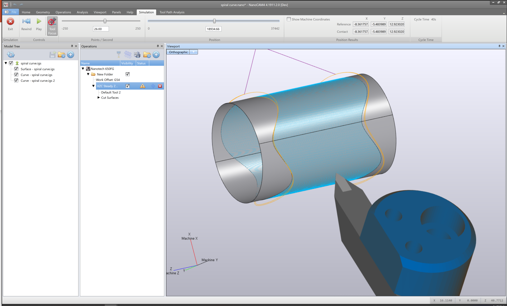
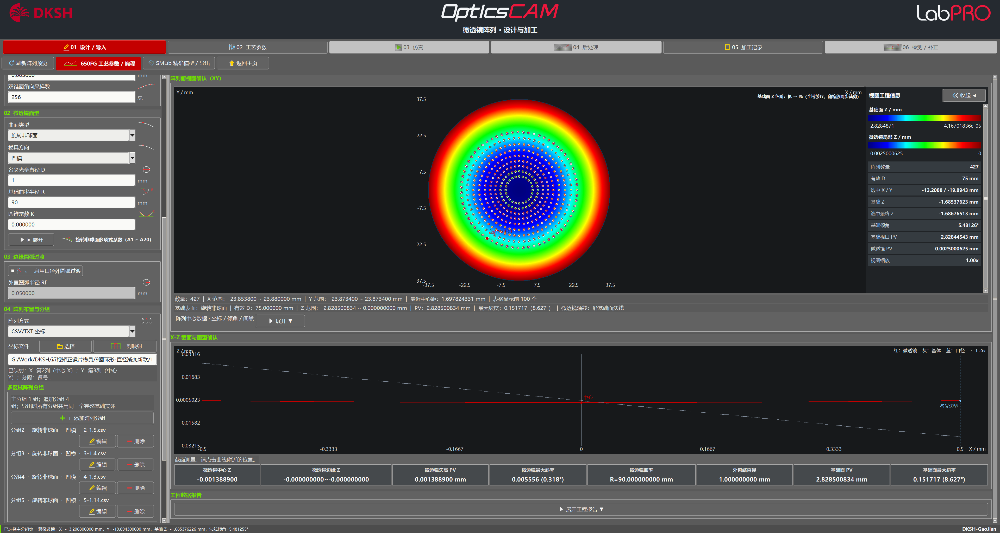
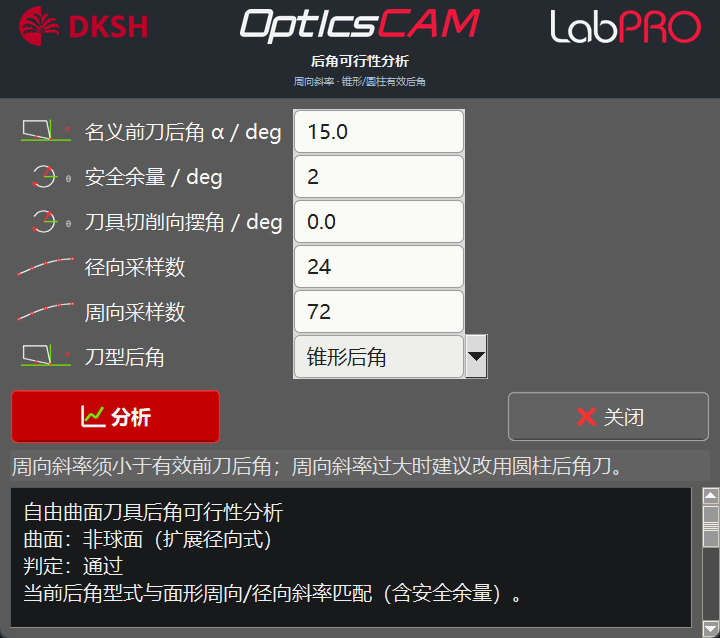

辅助面 / 点云转换步骤多，改一处常牵动整条链路。
封面
01 / 09
DKSH LabPRO · Nanotech 650FG 工艺域
OpticsCAM
2.0.159 · 超精密光学 CAM
把光学面型系数，直接算成可验证的刀轨与 NC
面向单点金刚石车削、慢刀/快刀、刨削、阵列与磨削。工程内改系数即可重算，少做外部辅助几何与点云中转。
XZBXZCXYZBXYZCXYZBCXYZABC
- 内核刀轨动画来自交付案例 NC 离屏渲染
- 词序与 650FG 后处理合同一致
KERNEL NC REEL
/
XZB
真实内核 NC · 多工艺连续回放
01 · 为什么需要 OpticsCAM
复杂光学件的瓶颈，往往在「几何准备」而不在下刀
非球面、自由曲面、菲涅尔、衍射、阵列与微结构同属超精密光学 CAM 域。行业里 NanoCAM4、DIFFSYS 覆盖面广；OpticsCAM 把现场重复步骤收成工程内参数与策略。
非球面自由曲面菲涅尔衍射阵列微结构
复杂件常需外部辅助曲面 / 辅助曲线，步骤多、切换频繁。改几何往往要重建辅助。
OpticsCAM 把面型系数沉淀为可复用工艺入口。
同一工程内改系数 / 姿态后重算刀轨与 NC。
非球面、菲涅尔、衍射、阵列与微结构同域覆盖。

NanoCAM4 界面：Steady-Z / 导引曲线与外部几何准备示例
02 · 工作台流程
同一工程里走完：面型 → 策略 → NC → 补正
偶次非球面 / 菲涅尔 / 衍射与 SPP；STEP·IGES·DXF 直读原生面；点云拟合与 RBF 补正。系数可直接进入加工策略，不必先拆成离散点云。
XZB G01 X12.430 Z-0.218 B+4.62 · XZC C128.40 X18.27 Z0.189 · XYZABC C-61.17 X65.93 Y102.96 Z-16.12 B1.04 A31.10 ·
系数面 / CAD / 点云进入同一工作台。
策略、姿态、刀轨与 1:1 接触检查。
面型、补正、NC 预览回到原工程。
Nanotech 650FG 宏与多轴 NC 输出。

参数化微透镜阵列：系数绘制并可转入策略
03 · 光学面设计
系数、截面与可行性，同一工作台联查
12+面型族
CADSTEP/IGES
RBF点云补正
偶次非球面、离轴、双锥、环曲面；联看矢高、斜率、截面后送入策略。
R / K / 多项式菲涅尔分齿六轴微结构加工ZernikeForbes QDXF→策略
六轴微结构 XYZABC · G01 C-61.174 X65.933 Y102.965 Z-16.125 B1.044 A31.106 · 词序 C X Y Z B A ·
矢高、斜率、可行性在同一视图核对。
衍射 / SPP 结构可直送多轴刨削策略。
STEP/IGES 保留修剪边界进入策略。
拟合残差与补正面可接回 XZC。

非球面工作台：系数、面形与可行性检查同屏
04 · 专用加工策略
按面型结构锁定轴系合同与工艺入口
6轴650FG 后处理
NC行级联动
1:1接触核查
XZ 两轴轮廓；XZB 逐齿与法向跟随；XZC 联动；C 轴虚拟中心与 XYZC 阵列车削。
XZB 法向XZC 慢刀MLA 螺旋/光栅/STSXYZABCD-CUT
D-CUT XZC · C72.500 X18.226 Z0.103 · MLA螺旋 XYZABC · MLA光栅 XYZB · MLA慢刀 XZC C5. X5.550 Z0.351 ·
B 稳定 / 自适应与接触点同屏核对。
慢刀螺旋与快刀 CMP 表同步输出。
砂轮法向 PTC 与 XYZBC 车削。
内腔真实刀位回放 · XZC / XYZC。
真实刀位 · XZB 法向跟随 / B 姿态 · NC 同步
05 · 分析 · 补正 · 输出
测量残差回工程，补正可多轮累计
229示例 PV nm
33示例 RMS nm
C0→C2累计补正
导入测量、去基准、PV/RMS/粗糙度；联看热图、三维与功率谱。示例残余 PV 229 nm / RMS 33 nm。
评价区域、去基准与 PV/RMS 一次完成。
拟合新处方，对照残差曲线可回退。
刀路与程序行高亮同步回放。
后处理与指令库支撑现场输出。
面型热图 · 截面 · 功率谱联动动画
06 · 复杂零件编程案例
交付案例真实 NC · 参数 → 策略 → 刀轨回放
B轴稳定 · 真实刀位 + NC 暗色回放
全R刀 · 连续齿面固定角 · 刀位与 NC 同步
07 · 工作流程比较
差异集中在几何准备与参数化闭环
| 维度 | NanoCAM4 | DIFFSYS | OpticsCAM |
|---|---|---|---|
| 几何准备 | 外部辅助面/线 | 点云转换 | 工程内参数驱动 |
| 阵列/微结构 | 外部分组常见 | 离散数据 | 分组·基面·法向内置 |
| 多轴姿态 | 辅助面驱动多 | 自主性受限 | 跟随加工基面法向 |
| 工艺迭代 | 常重建辅助 | 转换链路长 | 改系数后工程内重算 |
| CAD 导入 | 常需重建 | 离散化损耗 | STEP/IGES 直读原生面 |
| 轴系合同 | 依赖后处理配置 | 策略受限 | XZB / XZC / XYZB / XYZABC 一一对应 |
分组与基面同台定义，三种策略各自输出独立 NC。
3D 非球面柱面直接进入刨削，刀轨与 NC 同步。
六轴姿态跟随加工基面法向，避免外部导引面。
测量残差回到同一工程，系数 / NC 可多轮累计。
柱面 XYZB 参数变体 · 步距/刀尖 R 与其它案例不同
08 · 三项编程改进
把时间留给刀具、姿态与工艺判断
阵列几何准备
分组、基面与单元处方在工程内定义，三种策略各自输出独立 NC，不必外部分组再回导。
微结构刀具姿态
姿态跟随加工基面法向，减少独立姿态驱动面；六轴词序与接触点同屏核对。
法向车削策略
同一轮廓可选 B 稳定、自适应或左右刃切入，刀位与 NC 行级联动回放。
OpticsCAM 2.0.159 · DKSH LabPRO · 刀轨来自内核计算结果离屏渲染（非界面录屏）